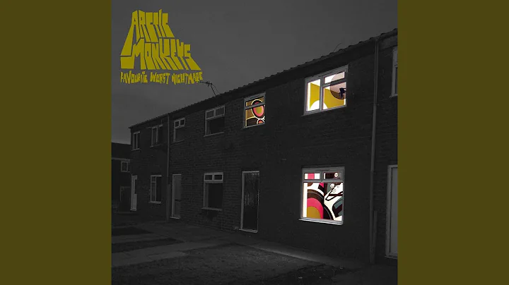
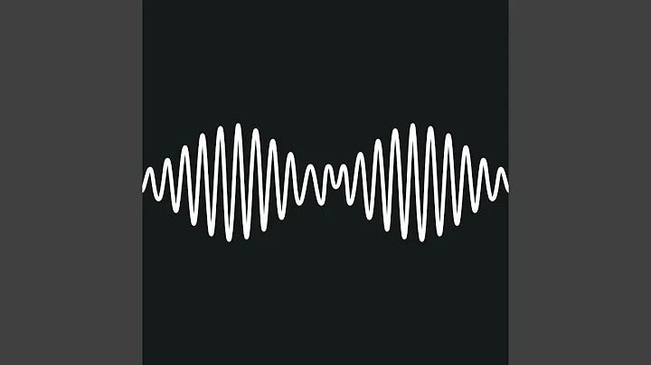
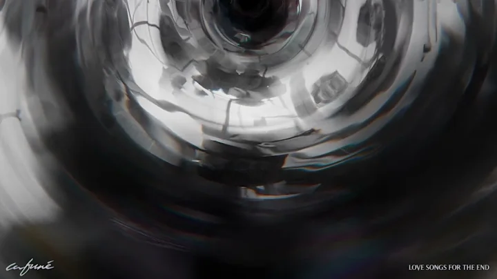
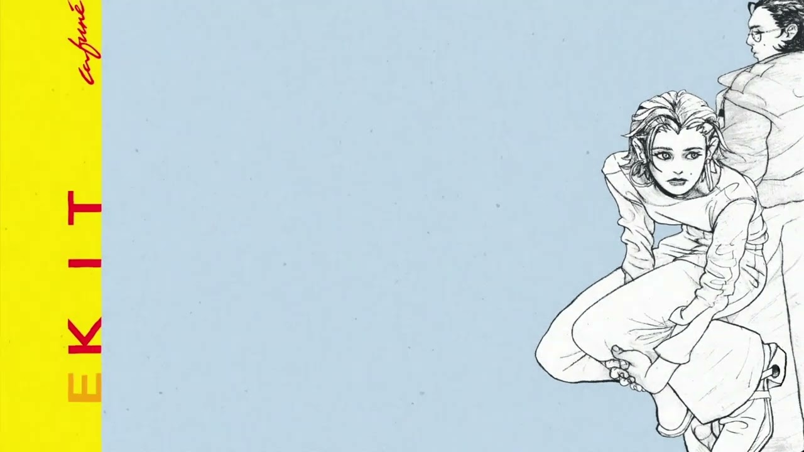
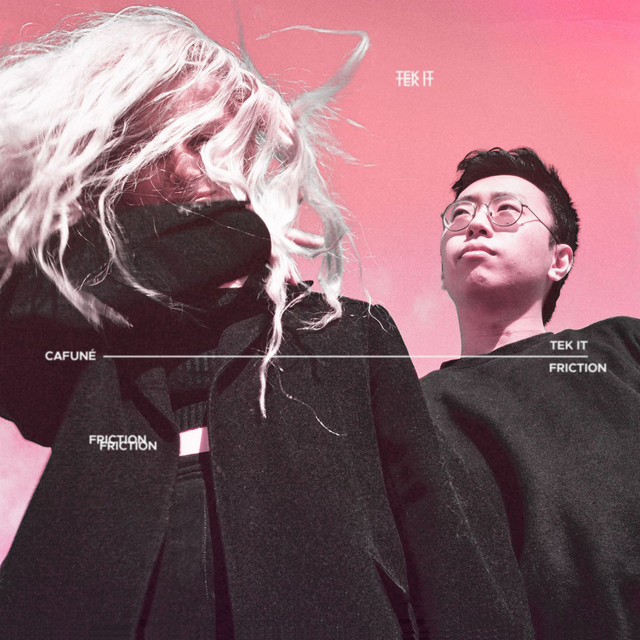

505

R U Mine
No. 1 Party Anthem
Formation & Members: Arctic Monkeys are a critically acclaimed
English rock band formed in Sheffield in 2002, comprising Alex Turner (vocals/guitar), Jamie Cook (guitar), Nick
O'Malley (bass), and Matt Helders (drums). Rise to Fame: They rose to fame in the mid-2000s via
internet-based word-of-mouth, becoming pioneers of the "blog rock" era with their energetic garage rock sound.
Recognition & Achievement: Their debut album holds the record for the fastest-selling debut in
UK history, and they have since become one of the most influential rock bands of the 21st century.

Perspective

Tek It

Friction
Formation & Story: Cafuné is an American indie pop duo
formed in 2014 by Sedona Schat and Noah Yoo. The pair met at NYU and decided to create music together,
establishing a deep creative partnership. Sound & Production: They create self-produced music
blending alternative pop, electronic, and dream-pop sounds with innovative production techniques.
Breakthrough & Albums: Known for their viral 2021 hit "Tek It," they have since released albums
like Running (2021) and Bite Reality (2024), solidifying their presence in the indie music landscape.